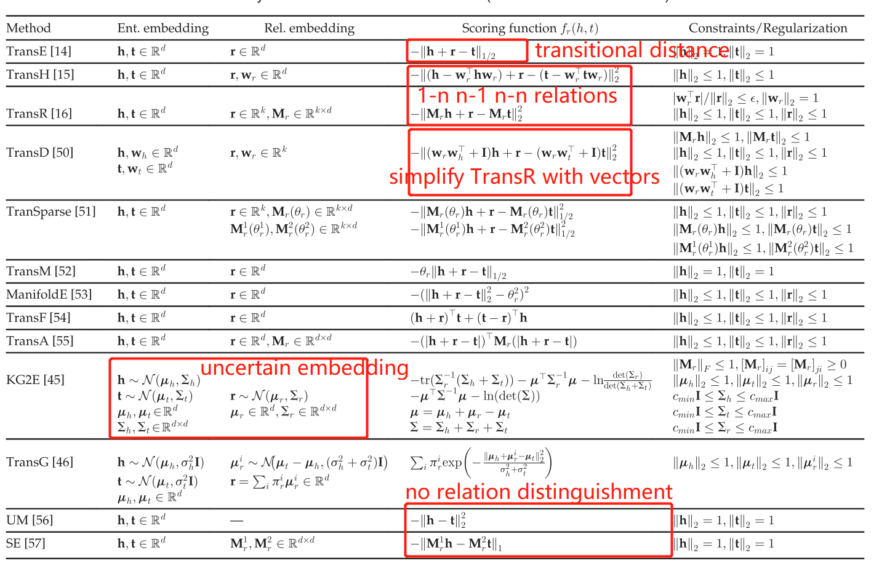
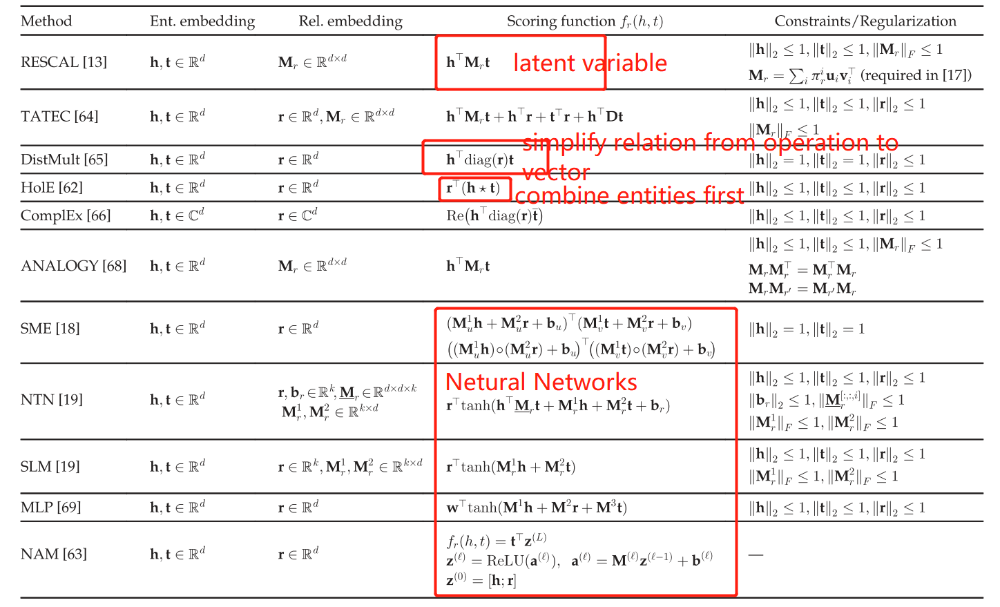
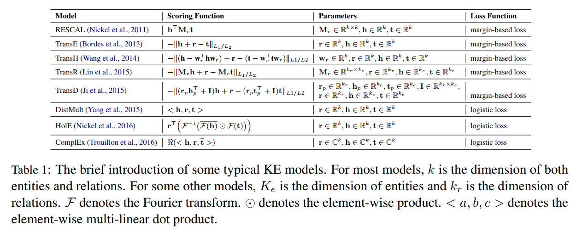
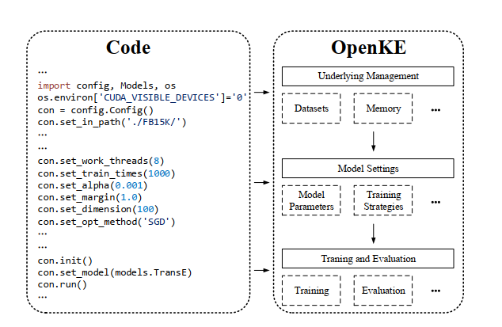
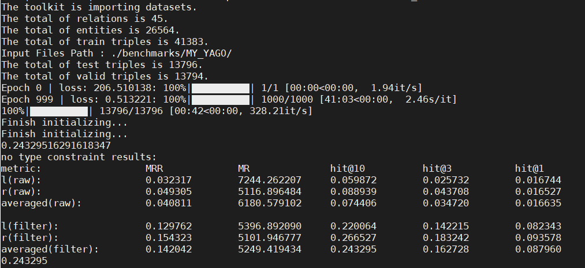
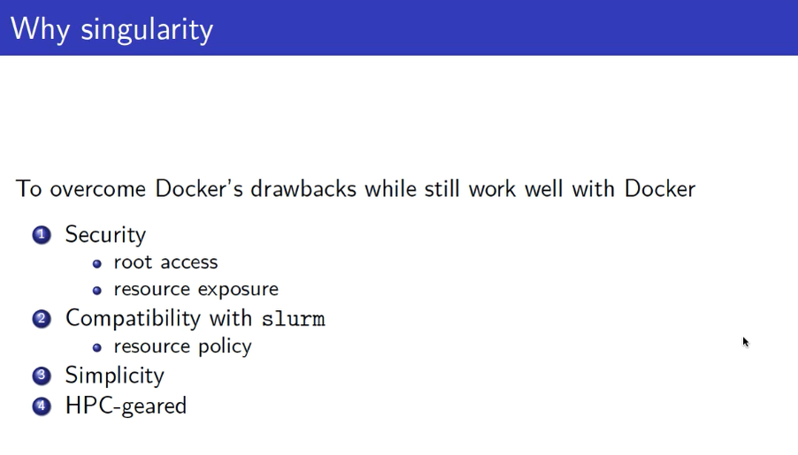
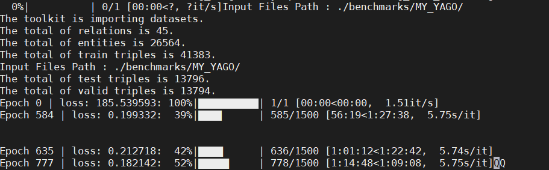

2,613 words in total, 11 minutes required. 图谱实践笔记第五篇：OpenKE- KG Embedding OPENKE简介清华大学自然语言处理实验室近日发布了 OpenKE 平台，整合了 TransE、TransH、TransR、TransD、RESCAL、DistMult、HolE、ComplEx 等算法的统一接口高效实现，以及面向 WikiData 和 Freebase 预训练知识表示模型 [1]。 拥有配置多种训练环境和经典模型的简易接口； 对高性能 GPU 训练进行加速和内存优化； 高效轻量级的 C++实现，用于快速部署和多线程加速； 项目链接：http://openke.thunlp.orgGitHub：https://github.com/thunlp/OpenKE论文下载：https://www.aclweb.org/anthology/D18-2024/ OPENKE的三大贡献： 数据层面：统一化的内存和数据管理机制； 算法层面：统一的数学定义和nagative sampling算法； 计算层面：并行训练和pyTorch/Tensor的GPU集成； 数据集数据集有以下五种格式： train.txt：训练文件，每行以 (e1, e2, rel) 格式书写，第一行是三元组的数量。需要注意rel是放在每个句子的最后的； valid.txt：验证文件，和 train.txt 格式一样； test.txt：测试文件，和 train.txt 格式一样； entity.txt：所有的实体和对应的 id，每行一个实体及其 id； relation2id.txt：所有的关系和对应的 id，每行一个关系及其 id。 在benmark文件夹下作者还编写了一个n-n.py文件，用来生成KE中其他需要的文件，如type-constrain，1-n，n-n等中间结果。注意这个是TransR所需要用来进行negative sampling的。 工具包基于 TensorFlow 的知识表示学习（KRL）的高效实现。使用 C++实现了一些基础操作，如数据预处理和负采样。每一个特定的模型都用 TensorFlow 和 Python 接口实现，因此能方便地在 GPU 上运行模型。OpenKE 提供了训练和测试多种 KRL 模型的简易接口，无需在冗余数据处理和内存控制上花费太多功夫。OpenKE 实现了一些经典和高效的模型用于支持知识表示学习，这些模型包括： TransE http://papers.nips.cc/paper/5071-translating-embeddings-for-modeling-multi-relational-data.pdf TransH https://www.aaai.org/ocs/index.php/AAAI/AAAI14/paper/viewFile/8531/8546 TransR https://www.aaai.org/ocs/index.php/AAAI/AAAI15/paper/viewFile/9571/9523/ TransD http://anthology.aclweb.org/P/P15/P15-1067.pdf RESCAL http://www.icml-2011.org/papers/438_icmlpaper.pdf DistMult https://arxiv.org/pdf/1412.6575.pdf HolE https://www.aaai.org/ocs/index.php/AAAI/AAAI16/paper/viewFile/12484/11828 ComplEx http://proceedings.mlr.press/v48/trouillon16.pdf 安装和执行123456$ cd path/to/you/want$ git clone -b OpenKE-PyTorch https://github.com/thunlp/OpenKE$ cd OpenKE$ cd openkeCompile C++ files$ bash make.sh 在windows上目前执行是很困难的，网上有一篇不错的博文[4]，通过修改c文件的形式来生成windows下的编译文件，可参考，尚未实践。 KBE算法总结以下是各种embedding方法的综合比较。目前为止，以下仅部分囊括在OPENKE中 Distance-based Methods (TransE family) Distance based Methods Semantic-based Methods (RESCAL family) Semantic based Methods 两种经典的loss function： Margin-based loss：使得真例$t$和伪例$t’$（corrupted，并非错误，而是不存在于当前KG中）的margin最大化：上式中$\gamma$是预定义的margin值，$S$是scoring function, $[]_{+}$保留大于0的部分。 另外一些方法把训练作为分类任务来看待，因而优化以下的正则化的logistic loss：即使得正例的scoring得分更高。 OPENKE 实现的算法 代码封装代码封装 并行学习 GPU learning，底层对TensorFlow和pyTorch进行了接口扩展 CPU的并行计算，两种策略，free-lock模式，每个线程对梯度进行计算更新embedding不需要写锁；同步操作模式，需要每个线程协同最后将各线程的梯度进行平均后更新embedding 评估对于每个测试三元组，将头部移除，然后依次替换成实体集中的每个实体。那些伪例三元组的分数首先由模型计算，然后按顺序排序。然后，OPENKE获得正确实体的排名。通过删除那些尾部实体，也可以重复整个过程。OPENKE报告了排名在前10/3/1（Hits@10，Hits@3，Hits@1中的正确实体所占的比例。还报告了在此设置下测试三元组的MRR (The mean reciprocal rank) 和MR (The reciprocal rank)。 因为某些伪例三元组可能在训练集中和验证集中。在这种情况下，那些伪例三元组可能会排在测试三元组之上，但这不应被视为错误，因为两个三元组都应该是正确的。因此，OPENKE删除了出现在训练，验证或测试集中的那些伪例三元组，从而确保伪例三元组不在数据集中。即Filter的结果。 对于那些大型实体集，使用整个实体集破坏所有实体是费时的。因此，OPENKE还为具有某些受其关系确定的有限实体集的损坏实体提供了名为type-constrain的实验设置。 评估度量 实践OPENKE采用奥尔堡大学的AI云服务[2]来测试OPENKE的代码，这一平台服务是通过容器技术来支持的，也就即用户可以根据需要安装和定制自有的software放入一个容器的镜像中，它使得版本兼容和开发环境的统一化变得轻松和简单。一个视频教程在[3]，以下是一些基本的笔记内容。 BYOBUByobu是对与Linux计算机操作系统一起使用的GNU Screen终端多路复用器或tmux的增强功能，可用于提供屏幕通知或状态以及选项卡式多窗口管理。它旨在改善用户连接到远程服务器时的终端会话。 Byobu keybindings:http://manpages.ubuntu.com/manpages/eoan/en/man1/byobu.1.html Byobu中文教程（ubuntu 16.04）：https://www.howtoing.com/how-to-install-and-use-byobu-for-terminal-management-on-ubuntu-16-04 其使用窗口和网格的功能十分有用。 SLURMSLURM 是一种可用于大型计算节点集群的高度可伸缩和容错的集群管理器和作业调度系统。SLURM 维护着一个待处理工作的队列并管理此工作的整体资源利用。它还以一种排他或非排他的方式管理可用的计算节点（取决于资源的需求）。最后，SLURM 将作业分发给一组已分配的节点来执行工作并监视平行作业至其完成。 本质上，SLURM 是一个强健的集群管理器（更关注于对功能丰富性的需求方面），它高度可移植、可伸缩至大型节点集群、容错好，而且更重要的是它是开源的。 官方文档：https://slurm.schedmd.com/documentation.htmlIBM文档：https://www.ibm.com/developerworks/cn/linux/l-slurm-utility/index.html SingularitySingularity是一个免费的，跨平台的开源计算机程序，执行操作系统级虚拟化，也称为容器化。 Singularity的主要用途之一是为科学计算和高性能计算世界带来容器和可重复性。 对可重复性的需求要求能够使用容器将应用程序从系统移动到系统。 和Docker的比较 Singularity也提供了各种各用的镜像文件，称之为.sif文件，一个比较有用的Singularity Hub网站是https://singularity-hub.org/，可以帮助用户复制和重制镜像文件（来源可以是docker）。 Singularity和生成使用镜像的教程：https://singularity.lbl.gov/singularity-tutorialhttps://sylabs.io/docs/ 以下演示一个生成pytorch_19.10-py3.sif（pytorch 19.10 + python3 + ubuntu）的singularity镜像。 1234567891011121314151617181920212223242526272829303132333435363738394041424344454647484950515253545556575859606162Bootstrap: dockerFrom: nvidia/pytorch:19.10-py3Registry: nvcr.ioIncludeCmd: yes%environment # export LISTEN_PORT=12345 # export LC_ALL=C export LANG=en_US.UTF-8 CSTINSTALLDIR=/opt/cst/CST_STUDIO_SUITE_2019 export PATH=$CSTINSTALLDIR:$CSTINSTALLDIR/LinuxAMD64:$PATH%post apt-get update && apt-get install -y netcat NOW=`date` LANG=en_US.UTF-8 echo "export NOW=\"${NOW}\"" >> $SINGULARITY_ENVIRONMENT echo "export LANG=en_US.UTF-8" >>$SINGULARITY_ENVIRONMENT # Language/locale settings # replace en_US by your desired locale setting, # for example de_DE for german. echo $LANG UTF-8 > /etc/locale.gen # apt-get install -y python3-pip # apt-get install -y libhdf5-serial-dev # /opt/conda/bin/pip install --upgrade pandas # /opt/conda/bin/pip install h5py # /opt/conda/bin/pip install Cython # /opt/conda/bin/pip install networkx # /opt/conda/bin/pip install tables export PATH=/opt/conda/bin:$PATH conda install pytables -y # startscript to copy dotfiles from /etc/skel echo -e '#! /bin/sh\n [ -e "$HOME/.config" ] || cp -R /etc/skel/. $HOME/ \n exec $* \n ' > /usr/local/bin/start chmod +x /usr/local/bin/start%test /opt/conda/bin/python -c "import tables; tables.test()" if [ $? -eq 0 ]; then echo "Tables is succesfully installed." else echo "Could not find Tables, check build file again." fi%runscript echo "Container was created $NOW" echo "Arguments received: $*" exec /usr/local/bin/start $@%startscript echo "Hello world!"%labels Author xxxx Version v0.0.1%help This is an image for run OpenKE. 在AI cloud上执行OPENKEOPENKE以运行TransR为例： 登录到跳板机 ssh aau_account@ai-pilot.srv.aau.dk 登录到AI前端机 上传代码到执行文件夹下 给KG的entity和relation生成对应的id，放到/benchmarks/test文件夹严格按照OPENKE的格式要求； 在/benchmarks/test下执行n-n.py文件，生成中间编码结果； 创建一个KGE的py文件，可以copy自examples目录下，OPENKE创建一个TransR的实例，如OpenKE/train_transr_yago.py 创建一个用于存储中间结果的文件，即OpenKE/result/ （这个是OPENKE的默认路径） 准备工作完毕 执行SBATCH脚本，利用slurm分配虚拟资源，slurm调用singularity创建容器 例如创建一个create_job.sh12345678910111213#!/bin/bash#SBATCH --job-name=job_test#SBATCH --qos=allgpus#SBATCH -p batch#SBATCH --mem=10gb#SBATCH --time=24:00:00#SBATCH --gres=gpu:2#SBATCH --output=my_test_%j.logpwd; hostname; datesingularity exec --nv pytorch_19.10-py3.sif python ../OpenKE/train_transr_yago.pydate 通过tail -f my_test_xxx.log 查看执行日志，xxx是sbatch执行的进程ID。 训练过程 一些OPENKE的metrics： MRR： The mean reciprocal rank is a statistic measure for evaluating any process that produces a list of possible responses to a sample of queries, ordered by probability of correctness. 越大越靠谱； MR： The reciprocal rank of a query response is the multiplicative inverse of the rank of the first correct answer: 1 for first place, 1/2 for second place, 1/3 for third place and so on. Hit@k，即在top-k中命中的概率； 扩展阅读1.https://www.jiqizhixin.com/articles/2017-11-04-2. ↩2.claaudia AI cloud ↩3.https://www.youtube.com/playlist?list=PLO7bpxApY95TlTY7pMyPIk0RaJQD85NnG ↩4.https://www.twblogs.net/a/5c21f87fbd9eee16b3daea9c ↩ ← Previous Post Next Post→ Table of Contents OPENKE简介数据集工具包安装和执行KBE算法总结代码封装并行学习评估实践BYOBUSLURMSingularity在AI cloud上执行OPENKE扩展阅读